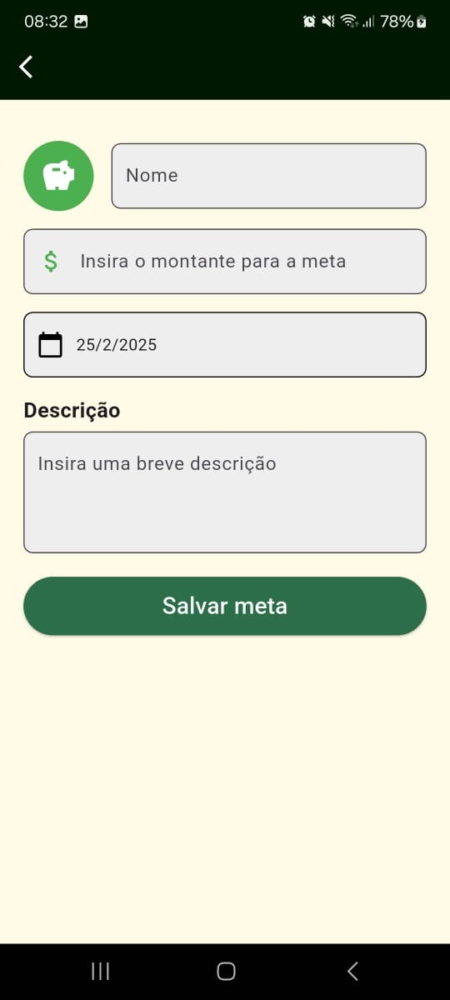
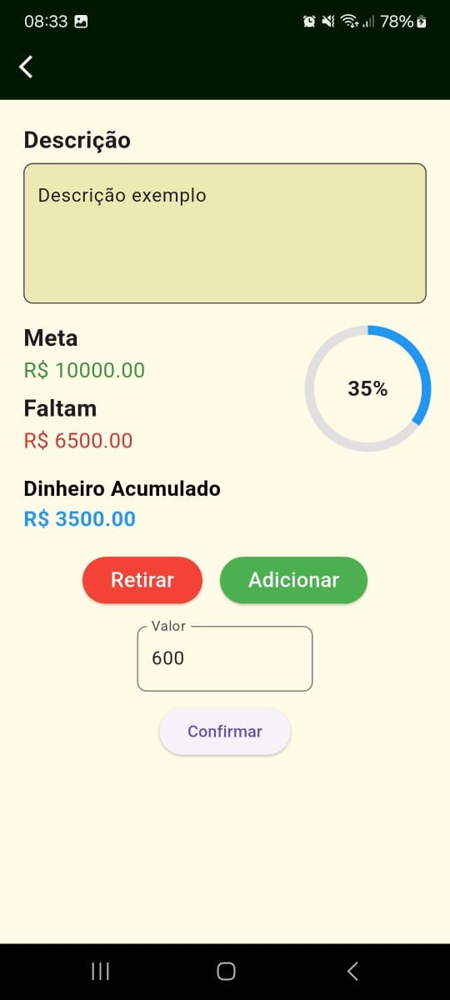
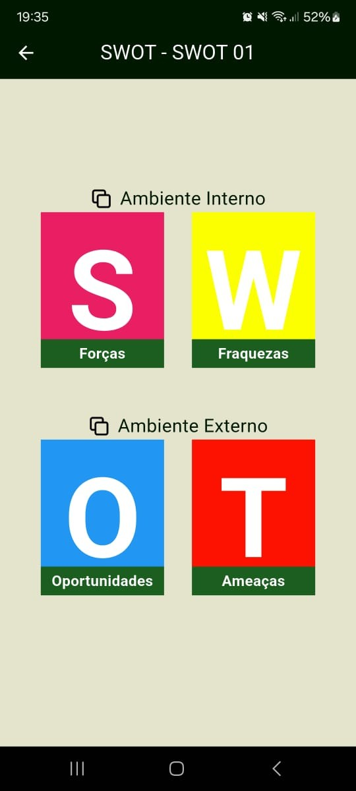
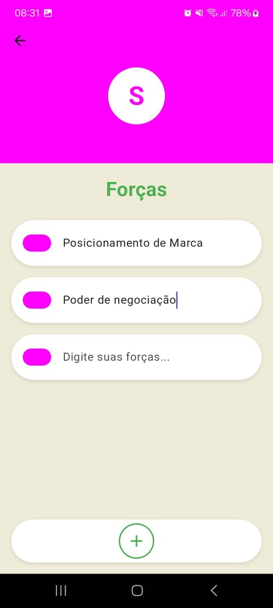

Perene
Mobile Business APP created as a college project.
It presents multiple features that would be useful in the context of managing a business
such as: SWOT analysis, Business plan, and Financial goals.
Developed using Flutter and Dart, with Firebase as the backend service.
Features
Chat bot
AI assistant using Gemini as the backend to provide business-related support and guidance to users.
Business Planning
Feature where the user can create theirs plans and add useful information such as:
Clients, Partners, Activities, Resources, and others.
Financial Goals
Feature that allows users to set financial goals for their business, track progress, and manage budgets effectively.
 SWOT Analysis
Feature that helps users to identify and analyze the Strengths, Weaknesses, Opportunities, and Threats related to their business or project.
 